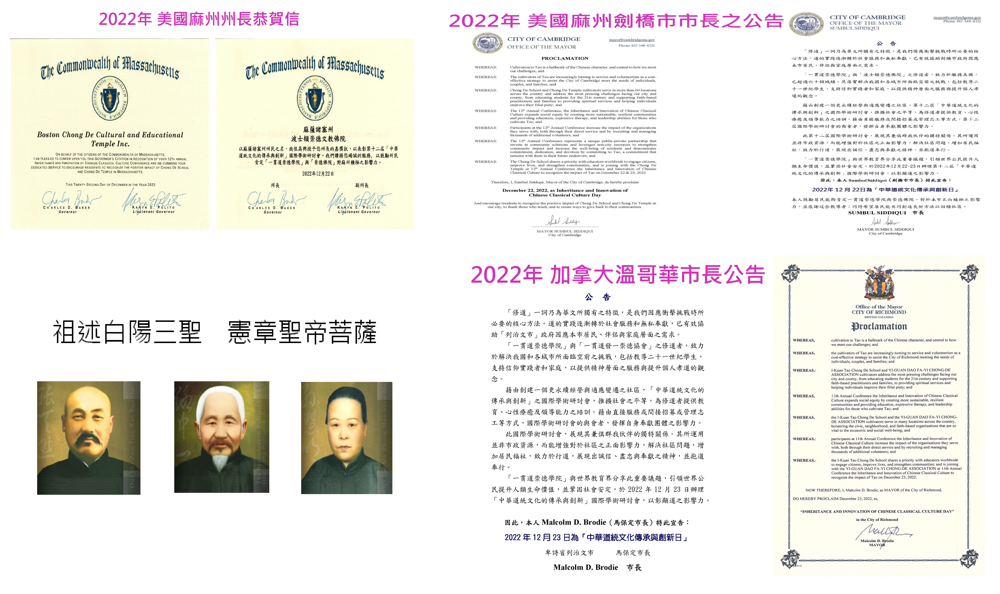

Admissions
115學年度 碩士班甄試入學榜單公告
恭喜所有錄取新生，請詳閱報到須知並於期限內完成手續。
Academic
經典研究國際研討會：易經與現代管理
本場講座邀請到李教授主講，探討易經智慧如何應用於當代企業管理與組織發展。

Culture & Video
【影音】崇德學院十週年回顧紀錄片
十年樹木，百年樹人。讓我們一起回顧這十年間的點滴與成長。

Student Life
偏鄉教育志工隊 寒假出團招募中
熱血的大學生看過來！今年寒假讓我們一起走入偏鄉，用愛溫暖每一個角落。
Urgent
校園網路維護通知
本週六上午 08:00 - 12:00 將進行機房維護，期間校園網路暫停服務。

Lecture
宗教與哲學系列講座 #03
從《中庸》看不偏不倚的人生哲學。